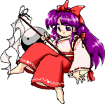

- Welcome to Touhou Wiki!
- Please register to edit. For assistance, check in with our Discord server or IRC channel.
ZUN
| ZUN Also known as Jun'ya Ota ( | |
|---|---|
|
ZUN during the PlayDoujin! Meeting (2015)
| |
| Title |
Hakurei Kannushi, Team Shanghai Alice Leader |
| Born | |
| Location | |
| Gender |
Male |
| Notable from | |
| Circle(s) | |
| Occupation |
Programmer, Game Director, Game Producer, Character Designer, Illustrator, Game Designer, Music Composer, Novelist, Comic Writer |
| Music Themes |
Kid's Festival ~ Innocent Treasures (Changeability of Strange Dream) |
| Art Example |
 |
| Music Example |
Composed UFO Romance in the Night Sky from Undefined Fantastic Object. |
| Websites | |
Jun'ya Ota (太田順也 Ohta Jun'ya), pen-name ZUN, is the sole known member of Team Shanghai Alice, and is the designer, programmer, script writer, and composer of the extremely popular Touhou Project. He's seen to be rather reclusive and it's known that he's very fond of beer. He was employed by Taito Corporation,[1] and had been involved in the production of various Taito titles as a programmer.
Works[edit]
Games[edit]
- 東方靈異伝 ～ Highly Responsive to Prayers (ZUN Soft 1996)
- 東方封魔録 ～ Story of Eastern Wonderland (ZUN Soft 1997)
- 東方夢時空 ～ Phantasmagoria of Dim.Dream (ZUN Soft 1997)
- 東方幻想郷 ～ Lotus Land Story (ZUN Soft 1998)
- 東方怪綺談 ～ Mystic Square (ZUN Soft 1998)
- 東方紅魔郷 ～ the Embodiment of Scarlet Devil (Team Shanghai Alice 2002)
- 東方妖々夢 ～ Perfect Cherry Blossom (Team Shanghai Alice 2003)
- 東方萃夢想 ～ Immaterial and Missing Power (Collaboration between Team Shanghai Alice & Twilight Frontier 2004)
- 東方永夜抄 ～ Imperishable Night (Team Shanghai Alice 2004)
- 東方花映塚 ～ Phantasmagoria of Flower View (Team Shanghai Alice 2005)
- 東方文花帖 ～ Shoot the Bullet (Team Shanghai Alice 2005)
- 東方風神録 ～ Mountain of Faith (Team Shanghai Alice 2007)
- 東方緋想天 ～ Scarlet Weather Rhapsody (Collaboration between Team Shanghai Alice & Twilight Frontier 2007)
- 東方地霊殿 ～ Subterranean Animism (Team Shanghai Alice 2008)
- 東方星蓮船 ～ Undefined Fantastic Object (Team Shanghai Alice 2009)
- 東方非想天則 ～ 超弩級ギニョルの謎を追え (Collaboration between Team Shanghai Alice & Twilight Frontier 2009)
- ダブルスポイラー ～ 東方文花帖 (Team Shanghai Alice 2010)
- 妖精大戦争 ～ 東方三月精 (Team Shanghai Alice 2010)
- 東方神霊廟 ～ Ten Desires (Team Shanghai Alice 2011)
- 東方心綺楼 ～ Hopeless Masquerade (Collaboration between Team Shanghai Alice & Twilight Frontier 2013)
- 東方輝針城 ～ Double Dealing Character (Team Shanghai Alice 2013)
- 弾幕アマノジャク ～ Impossible Spell Card (Team Shanghai Alice 2014)
- 弾幕アマノジャク ゴールドラッシュ (Team Shanghai Alice 2014)
- 東方深秘録 ～ Urban Legend in Limbo (Collaboration between Team Shanghai Alice & Twilight Frontier 2015)
- 東方紺珠伝 ～ Legacy of Lunatic Kingdom (Team Shanghai Alice 2015)
- 東方憑依華 ～ Antinomy of Common Flowers (Collaboration between Team Shanghai Alice & Twilight Frontier 2017)
- 東方天空璋 ～ Hidden Star in Four Seasons (Team Shanghai Alice 2017)
- 秘封ナイトメアダイアリー 〜 Violet Detector (Team Shanghai Alice 2018)
Music Soundtracks[edit]
- 蓬莱人形 ～ Dolls in Pseudo Paradise (Team Shanghai Alice 2002)
- 蓮台野夜行 ～ Ghostly Field Club (Team Shanghai Alice 2003)
- 夢違科学世紀 ～ Changeability of Strange Dream (Team Shanghai Alice 2004)
- 幻想曲抜萃 東方萃夢想 ORIGINAL SOUND TRACK (Collaboration between Team Shanghai Alice & Twilight Frontier 2005)
- 卯酉東海道 ～ Retrospective 53 minutes (Team Shanghai Alice 2006)
- 幺樂団の歴史1 ～ Akyu's Untouched Score vol.1 (Team Shanghai Alice 2006)
- 大空魔術 ～ Magical Astronomy (Team Shanghai Alice 2006)
- 幺樂団の歴史2 ～ Akyu's Untouched Score vol.2 (Team Shanghai Alice 2006)
- 幺樂団の歴史3 ～ Akyu's Untouched Score vol.3 (Team Shanghai Alice 2006)
- 幺樂団の歴史4 ～ Akyu's Untouched Score vol.4 (Team Shanghai Alice 2007)
- 幺樂団の歴史5 ～ Akyu's Untouched Score vol.5 (Team Shanghai Alice 2007)
- 全人類ノ天楽録 東方緋想天 ORIGINAL SOUND TRACK (Collaboration between Team Shanghai Alice & Twilight Frontier 2008)
- 核熱造神ヒソウテンソク 東方非想天則 ORIGINAL SOUND TRACK (Collaboration between Team Shanghai Alice & Twilight Frontier 2009)
- 未知の花 魅知の旅 (Team Shanghai Alice 2011)
- 鳥船遺跡 ～ Trojan Green Asteroid (Team Shanghai Alice 2012)
- 伊弉諾物質 ～ Neo-traditionalism of Japan (Team Shanghai Alice 2012)
- 暗黒能楽集・心綺楼 東方心綺楼 ORIGINAL SOUNDTRACK (Collaboration between Team Shanghai Alice & Twilight Frontier 2013)
- 深秘的楽曲集 宇佐見菫子と秘密の部室 (Collaboration between Team Shanghai Alice & Twilight Frontier 2015)
- 燕石博物誌 ～ Dr. Latency's Freak Report (Team Shanghai Alice 2016)
- 旧約酒場 ～ Dateless Bar "Old Adam" (Team Shanghai Alice 2016)
- 深秘的楽曲集・補 東方深秘録初回特典CD (Collaboration between Team Shanghai Alice & Twilight Frontier 2016)
- 完全憑依ディスコグラフィ 東方憑依華 ORIGINAL SOUND TRACK (Collaboration between Team Shanghai Alice & Twilight Frontier 2018)
Print[edit]
- 東方香霖堂 ～ Curiosities of Lotus Asia (Colorful PUREGIRL 2003-2004; Magazine ELFICS 2004-2005; Elnavi 2005-2006; Dengeki MOE-OH 2006-2007)
- 東方三月精 ～ Eastern and Little Nature Deity (CompAce 2005-2006)
- 東方三月精 ～ Strange and Bright Nature Deity (CompAce 2006-2009)
- 東方三月精 ～ Oriental Sacred Place (CompAce 2009-2012)
- 東方文花帖 ～ Bohemian Archive in Japanese Red (Ichijinsha August 2005)
- 東方紫香花 ～ Seasonal Dream Vision (Tora no Ana October 2005)
- 東方求聞史紀 ～ Perfect Memento in Strict Sense (Ichijinsha December 2006)
- 東方求聞史紀 記憶する幻想郷 (Memorizable Gensokyo) (Comic REX December 2006)
- 東方儚月抄 ～ Silent Sinner in Blue (Comic REX 2007-2009)
- 東方儚月抄 ～ Cage in Lunatic Runagate (Chara☆Mel 2007-2009)
- 東方儚月抄 ～ 月のイナバと地上の因幡 (Inaba of Moon & Inaba of Earth) (Manga 4Koma KINGS Palette 2007-2009)
- The Grimoire of Marisa (Ichijinsha July 2009)
- 東方茨歌仙 ～ Wild and Horned Hermit (Chara☆Mel Febri 2010―Present)
- 東方求聞口授 ～ Symposium of Post-mysticism (Ichijinsha April 2012)
- 東方鈴奈庵 ～ Forbidden Scrollery (Comp Ace October 2012―Present)
- 東方外來韋編 ～ Strange Creators of Outer World (Dengeki Moeoh September 2015―Present)
- 東方文果真報 ～ Alternative Facts in Eastern Utopia (Kadokawa March 2017)
[edit]
- 秋霜玉 (Seihou Shuusou Gyoku) (Shunsatsu sare do? 1998-2000)
- 稀翁玉 (Seihou Kioh Gyoku) (Shunsatsu sare do? 2001)
- トルテ ル マジック (Torte Le Magic) (Pietoro 2001)
- 黄昏酒場～Uwabami Breakers～ (The Drinking Party 2007)
Works with Taito Corporation[edit]
- International League Soccer (2000) (Known as Greatest Striker in Japan)
- Magic Pengel (2002)
- Bujingai (2003)
- Graffiti Kingdom (2004)
- EXIT (2005)
Doujin Games[edit]
- 神魔討綺伝 ～ Magus in Mystic Geometries (D.N.A. Softwares 2008)
- 東方幻想麻雀 (D.N.A. Softwares 2009)
Doujin Print Works[edit]
Doujin Albums[edit]
- Cradle -東方幻樂祀典- (sound sepher 2004)
- Seasonal Dream Vision (CD) (Tora no Ana 2005)
- 東方幻想麻雀オリジナルサウンドトラック (Disaster/D.N.A. Softwares 2009)
- 8ビットミュージックパワーファイナル (Columbus Circle 2017)
Columns & Reviews[edit]
- Which Came First, Hakurei Kannushi's Games or Beer? (Comptiq 2009-2013; Comp Ace 2013-Present)
Biography[edit]
A limited biography of ZUN could be written based upon the lengthy texts included within his games (letters to the player) and interviews for various publications. Unfortunately, a large majority of these remain untranslated for the Touhou Wiki. Despite the current massive lack of information known or comprehensible, a good amount of relevant information is known about him.
Name[edit]

ZUN has used the nickname "ZUN" since his childhood, since it is a short form of his real name; in the arcade word, such manner was quite common for many players since most games had a three letter limit for the names to be input on the high score screen. He states that it's a "cultural thing", and that it sounds closely to "Jun" in his real name.[2] The name is also (only coincidentally): (a) the leading alphabets for "ZUNTATA"[2], the sound team at Taito Corporation where he worked; and (b) a Chinese bronze vessel used to store alcohol.
ZUN's real name is Jun'ya Ota (太田順也), seen in the documentation of the five PC-98 games, as well as the credits of Phantasmagoria of Dim.Dream, Lotus Land Story and Mystic Square in 1997 and 1998; the name has also been listed in archives of ZUN's profile page on his website up to June 2002. Additionally, not mentioned officially but the same name has been shown in the number of Taito games ZUN had involved in. His name was also used on official documents.[3]
ZUN also refers to himself as the Hakurei Kannushi (博麗神主), or the head priest of the Hakurei Shrine, used as his byline on some Touhou print works and the name shown on his Twitter account. He has stated he "secretly works in the Hakurei Shrine as the shrine master" in Changeability of Strange Dream. In canon, the Hakurei Shrine in Gensokyo has received sake from the outside world as an offering on several occasions, which may be a joking reference to how well-known ZUN is for drinking more than an oni.
History[edit]
ZUN was born on March 18, 1977, in Hakuba, Nagano, and graduated from Tokyo Denki University, the home of Amusement Makers. The MAG-Net episode shows that at the time, he lived in Ebina, Kanagawa. His current residence is unknown.
He has confirmed in an interview that he had started composing his own pieces of music since junior high school, and had learned how to play the Electone – which his parents had bought – and the trumpet – as part of a wind instruments ensemble – since elementary school.
ZUN started working at Taito in 1998, and left in 2007 due to disenchantment and disappointments with the job; meanwhile, due to Touhou's success he no longer had a need to stay.[2][4] He said in his interview with MAG-Net that his fondest ambition in life is to open a brewpub.
In a February 2012 radio interview, ZUN announced that he had recently married, with the formal ceremony held on May 27 (the day of Reitaisai 9). It's known that his wife is a game programmer working on smartphone games[2] and that they originally met in 2004. ZUN became a father to a healthy baby boy on June 13, 2014,[5] and a healthy baby girl on December 5, 2016.[6]
Appearance[edit]
ZUN appears to always wear a flat cap. He mainly wears a green, flower-patterned ascot and a black one with a gold and red design around it. He also wears glasses. He generally gets his flat caps by looking around normal shops, flea markets or nearby events.[7]
ZUN has stated in an interview that he weighs only 50kg – roughly 110lbs, around about 7.8st. Whether this is really accurate is impossible to truly confirm, but it's clear that he's very thin. His height is 173cm (1.73 meters)[8].
Personality[edit]
ZUN appears to be a rather cheerful person, as seen in most of his interviews as he rather laughs at a lot of things. However, he can be rather quiet when talking. An example of him been quiet when talking is at the after-party of Hakurei Jinjya Reitaisai 8. He also can be nostalgic at times. He takes beer as one of his greatest passions, but for the true reason why he does and when he had his first beer is unknown. He'll feel uncomfortable if he hasn't got beer or a mobile phone near him.[9] His personal favourite beer is Kirin[7], brewed in Japan.
It is known that ZUN is a fan of music that uses FM (Frequency Modulation) Synthesis, as most of the non-MIDI music in the PC-98 games were created using FM Synthesis. He also states in a note in the Akyu's Untouched Score albums that he resents the gradual phasing out of FM Synthesis that's occurring today.
Relationship to Touhou[edit]
ZUN tends to find a lot of nostalgia towards the Touhou Project, like for example when at one point he was playing Highly Responsive to Prayers on the MAG-Net Documentary. He likes to put a lot of ideas and planning into creating Touhou games, and doesn't care if all he generally does is either working on Touhou or drinking beer.
He's stated on the comments of the theme Eternal Shrine Maiden from the same game mentioned that this song was one of the most important songs during the PC-98 era, but also stated that his favourite songs are generally his recent creations. He's also admitted that Reimu Hakurei holds a special place in his heart.[7]
In the past, ZUN jokingly stated in an e-mail that he's been working on – and will continue to work on – the Touhou Project games since a part of him lacks common sense. However, he has stated that the actual reason why he originally made the game series and Team Shanghai Alice is because he couldn't find any games he liked himself, so he decided to make games he liked entirely by himself. In the Swedish Magazine Interview, he replies to the last question with, "I'm going to keep making games that stand out, so if all my fans disappear I'm still happy I can keep doing the games I want." Even to this day, he honestly admits that he couldn't create anything other than Touhou and still holds true to this statement[7]. Also, Taito created the game Darius Gaiden – which is one of ZUN's favorite shoot'em up games – that makes another known reason for him to start the Touhou Project.
ZUN is very proud that the fanbase for the Touhou Project is very large, where he may take a look at a few fan-made works himself. He's admitted that may get jealous depending on how much quality is put into a fan-made Touhou work, but doesn't wish to choose a favourite to keep things fair with the whole fanbase. He doesn't wish to get influenced by fan-made Touhou works, but he states that the fanbase has influenced on how he works in life.[7]
Additional Information[edit]
- ZUN appears as a playable character in the fangame Touhou Unreal Mahjong.
- In his interview on Bohemian Archive in Japanese Red, ZUN said that he develops his games with Visual Studio, Adobe Photoshop and Steinberg Cubase (Cubase SX 3 at the time). In more recent interviews, he's always shown using the latest version of Cubase Pro available at the time.
- ZUN currently holds the world records for the Touhou Project as the "worlds most prolific fan-made shooter series".[10]
- The theme song "Kid's Festival ~ Innocent Treasures" in Changeability of Strange Dream is ZUN's official theme. He has stated in Bohemian Archive in Japanese Red that writing this song was somewhat embarrassing and that "It's like the theme song that plays when you make your entrance on a talk show". This has happened twice or more when ZUN entered a talk show.
- This theme seems to be the only one that ZUN wrote lyrics for. However, he either couldn't or didn't get anyone to sing the vocal part, so the theme was left as a non-vocal.
- On his website, ZUN claims the Last Judgement started out as an attempt at composing his own theme. He abandoned the idea as he felt the resulting song didn't fit well, and was perhaps "too good".
- It has been theorised that ZUN might've had trouble designing male characters due to the number of female characters – such as statements like "it would be weird to have an old man as the last boss in Touhou" for Myouren Hijiri been originally the final boss of Undefined Fantastic Object – but later confirmed that he feels that "boys get in the way of the game" and that "boys would just ruin the balance of the series."[7]
- About whether the PC-98 games are canon or not, he states that both PC-98 and Windows games are set in the same world. He recognizes that there are contradictions and for those, we should refer to the latest games for canon.[7]
- He has mentioned in the same Swedish Magazine Interview that the company he worked for didn't like his work on the Touhou Project very much since it meant that he was working two parts.
Fandom[edit]
- As it's his title, the word "Kannushi" (神主) is often seen synonymously with "ZUN".
- ZUN has been generally treated as a regular Touhou character with the rest of the Touhou Project characters, where he appears in fan-made fictions and games – such as Touhou Soccer Moushuuden – and fanart.
- A figure creator called Moge Koubou made an action figure of ZUN. With his permission, it was sold at the 2009 Winter Comiket.
- It's common for fans to jokingly state that what created Touhou and Gensokyo was beer, not ZUN.
- In fanart and doujinshi, the unsound effect, "ZUUUU~N!", is sometimes used.
- The trumpets heard in his music have often been referred to as "ZUNpets" (ＺＵＮペット) by fans.
- ZUN has been compared to Aya Shameimaru after being seen wearing this shirt, which resembles the one worn by Aya in Double Spoiler. Aya has also been referred to as "ZUN's girlfriend" because of her recurring appearance in the games.
ZUN Speaks[edit]
English[edit]
- ZUN's AWA Q&A Panel, September 2013
- The Untold History of Japanese Game Developers Interview, October 2013
Fully translated[edit]
- Doujin Barrier: The Work Called Touhou and the Fantasy of Game Creation, ZUN's lecture, February 2005
- Interview in Swedish Player1 Magazine, ~March 2006
- Bohemian Archive in Japanese Red/Interview
- ZUN's E-mails
- Miscellaneous illustrations by ZUN
- ZUN talks about Silent Sinner in Blue
- ZUN talks about Undefined Fantastic Object (YouTube)
- Interview on Nae Radio (September 2009)
- Personal Memo on Youki
- ZUN's reply to messages on the former Gensou Bulletin Board 1 (Proofreading wanted)
- ZUN's reply to messages on the former Gensou Bulletin Board 3 (Proofreading still wanted)
- Texts written by ZUN in LORD of VERMILION
- Doujin Round Table Interview from Shooting Gameside Vol.1 (2010)
- Nikenme Radio 3D event, and the birth of EoSD
- Summary Record of a Chat Between ZUN and a Korean Touhou Fan at Comiket76
- Interview with ZUN in a bar at Tokyo, part 1
- Interview with ZUN in a bar at Tokyo, part 2
- Interview with ZUN in a bar at Tokyo, part 3
- Doujin Round Table Discussion
- NHK's "imagine-nation" talks to ZUN(deadlink)
Partially translated[edit]
- Meiji University talkshow "Dawn of Touhou" (Summarized and selectively translated)
- Shanghai Alice Correspondence
- ZUN's Gensou Denshou Lecture (summary available on gensokyo.org)
- Invisible Games and Japanese, ZUN's blog
Untranslated[edit]
- ZUN's reply to messages on the former Gensou Bulletin Board 2
- ZUN's reply to messages on the former Gensou Bulletin Board 4
- ZUN's former blog "Touhou Shofu" 1
- ZUN's former blog "Touhou Shofu" 2
- ZUN's former blog "Touhou Shofu" 3
- ZUN's former blog "Touhou Shofu" 4
- ZUN's former blog "Touhou Shofu" 5
- ZUN's former blog "Touhou Shofu" 6
- ZUN's former blog "Touhou Shofu" 7
- ZUN's former blog "Touhou Shofu" 8
- ZUN's former blog "Touhou Shofu" 9
- ZUN's former blog "Touhou Shofu" 10
- ZUN's former blog "Touhou Shofu" 11
- ZUN's former blog "Touhou Shofu" 12
- ZUN's former blog "Touhou Shofu" 13
- ZUN's former blog "Touhou Shofu" 14
- ZUN's former blog "Touhou Shofu" 15
- Interview at 4gamer.net, December 2005
- ZUN talks about The Highly Responsive to Prayer at 4gamer.net
- Introduction to Touhou and brief interview with ZUN on "The Net Star" TV show (Niconico, sound only)
- ZUN talks about Subterranean Animism, part 1 (Niconico)
- ZUN gets drunk and rambles about stuff (Niconico)
- ZUN talks about Subterranean Animism, part 2 (Niconico)
- ZUN at the after-party of Hakurei Jinjya Reitaisai 7 on March 14, 2010 (Niconico)
- ZUN was on live cam! (YouTube)
- ZUN at the after-party of Hakurei Jinjya Reitaisai 8 on May 8, 2011 (Niconico)
- ZUN interview for Niconico Indies Game Fes 2013
- Denfaminico Gamer interview featuring ZUN and Toby Fox
Dead link[edit]
These videos were originally available and translated, but the uploader was forced to set them to private after several copyright claims.
They are now re-uploaded, though untranslated.
- Touhou MAG-Net Documentary/Interview Part 1 (mediafire)(.mkv packed .RAR)
- Touhou MAG-Net Documentary/Interview Part 2 (mediafire)(.mkv packed .RAR)
- Touhou MAG-Net Documentary/Interview Part 3 (mediafire)(.mkv packed .RAR)
Gallery[edit]
ZUN drinking Orval beer during his Undefined Fantastic Object interview.
ZUN in his interview with "The Net Star" (2008)
A photo of ZUN from a convention (?). He seems rather lonely...
ZUN's presentation about Scarlet Weather Rhapsody(?).
Another photo showing ZUN presenting Scarlet Weather Rhapsody(?). Doesn't his appearance resemble Aya Shameimaru?

ZUN at the after-party of Hakurei Jinjya Reitaisai 8 on May 8, 2011. Here, he's been tested if he can guess what beer goes with what number. He gets 3/3 correct.
"3 litres vs. Kannushi (Priest)"
"The infinity-th glass of beer"
Nekomimi mode
ZUN on Tokyo Game Show 2013
ZUN playing the fifth Touhou game Mystic Square.

External Links[edit]
References[edit]
- ↑ He is currently not employed by Taito. It was stated in Nico Nico Live (Association of Victims of Takeshi's Challenge -Come Out, Developers! Special-) broadcast on 3/31/2009.
- ↑ 2.0 2.1 2.2 2.3 The Untold History of Japanese Game Developers Interview: interview between John Szczepaniak and ZUN
- ↑ White Canvas Case: comment
- ↑ November 2012 Nikenme Radio 3D event
- ↑ https://twitter.com/korindo/status/477666648661319680
- ↑ https://twitter.com/korindo/status/206496584773537793
- ↑ 7.0 7.1 7.2 7.3 7.4 7.5 7.6 ZUN's AWA Q&A Panel
- ↑ Double Dealing Character Staff roll
- ↑ Notes on ZUN's Genyou Denshou Lecture
- ↑ "Most prolific fan-made shooter series". Guinness World Records. Retrieved 22 August 2011.